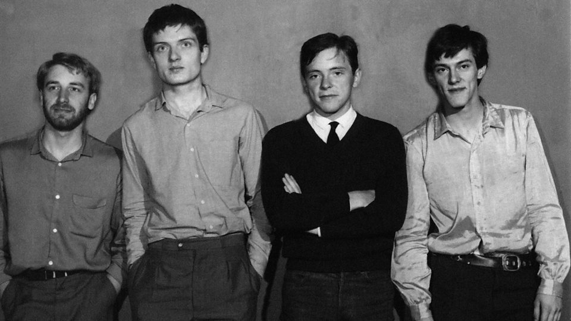
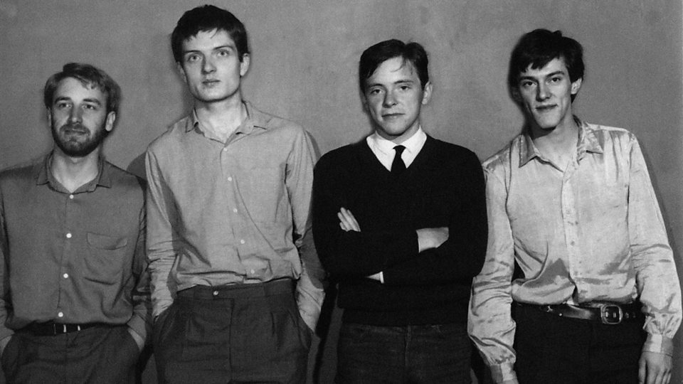
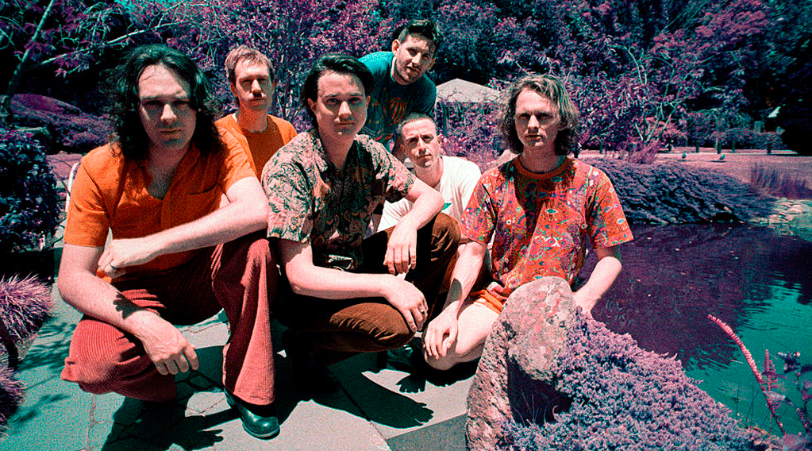
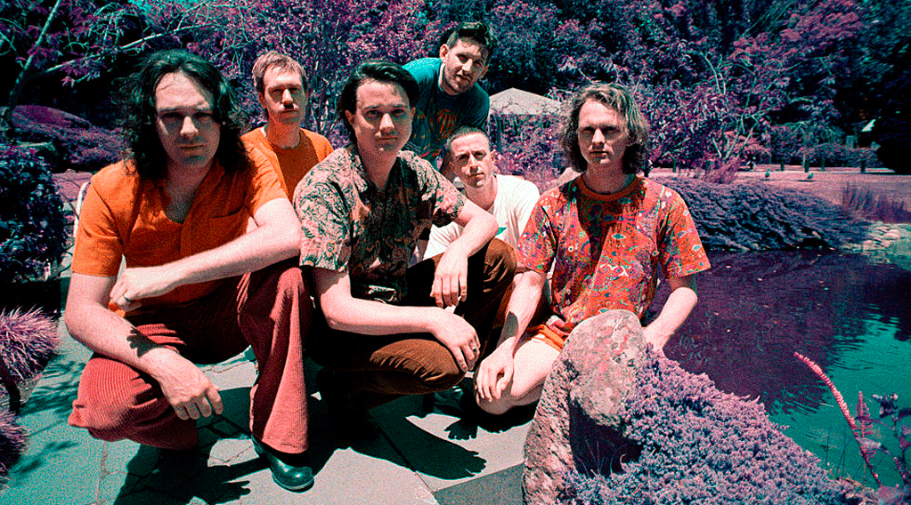
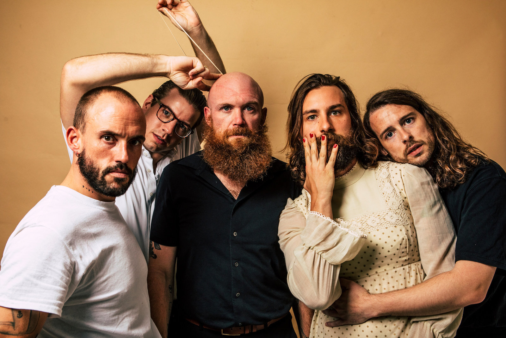
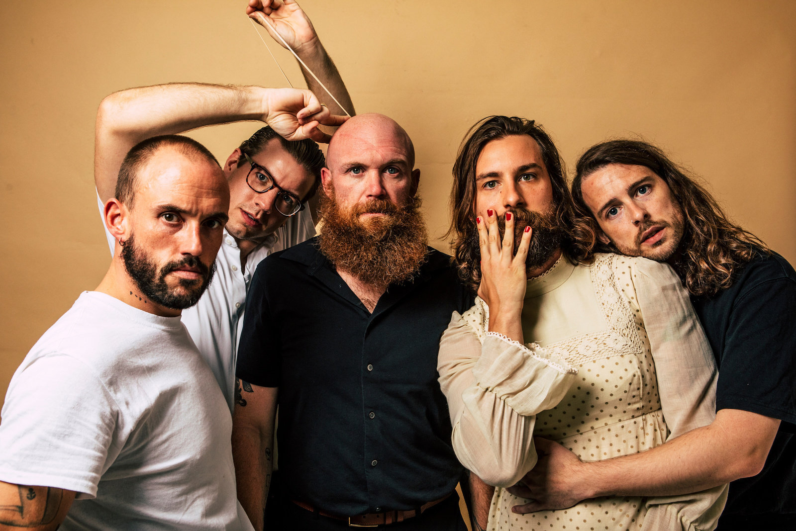

Kraftwerk, los alemanes que
revolucionaron la
electronica con sus sonidos futuristas y sus metodos
de hacer música extraños para los momentos en los que comenzaron,
porque... ya me dirás que en los años 70 tocar una cancion con una
calculadora era revolucionario y extraño, pero esto fue lo que les
llevó a crear: "
Computerwelt"
el mundo en el que las calculadoras y los ordenadores revolucionarían a
los humanos. Sus
directos son algo que merece la pena ver, porque
siempre se te presentan
4 señores alemanes con sus ordenadores y
teclados a hacer todas las canciones que llevan ya casi
50 años tocando
y detrás de ellos tienes una pantalla enorme que muestra animaciones
que van con las canciones que tocan, como es el caso del vídeo de "
Music Non Stop" o el de "
Pocket Calculator / Dentaku". Quizas lo más impresionante es que con la edad que tienen, tienen gran soltura para tocar todas las canciones.
 
 



 
